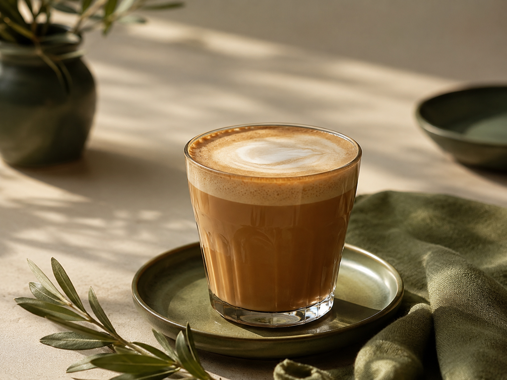

نوشیدنی کاپوچینو
گرمای یک فنجان آرامش با BoBo
با پودر نوشیدنی کاپوچینو Signature BoBo، در چند لحظه از عطر دلنشین قهوه و لطافت یک نوشیدنی خامهای لذت ببرید. این ترکیب با استفاده از قهوه باکیفیت، شیر خشک و بدون کریمر، فومر یا سایر افزودنیهای صنعتی تهیه شده تا طعم طبیعی و متعادل قهوه حفظ شود. تنها با افزودن شیر یا آب داغ، یک کاپوچینوی خوشعطر و دلنشین آماده کنید؛ انتخابی عالی برای استراحتی کوتاه، شروع یک روز پرانرژی یا همراهی با کیکها و شیرینیهای BoBo.
وزن بسته: ۵۰۰ گرم
زمان آمادهسازی: کمتر از ۲ دقیقه
اندازه هر سرو: ۲۸ گرم پودر + ۱۸۰ میلی لیتر شیر یا آب
دمای مایع: حدود ۷۵ تا ۸۵ درجه سانتیگراد
بازدهی: حدود ۱۷ لیوان
جهت ثبت سفارش به صفحات ما در پیامرسانهای اینستاگرام، تلگرام، بله یا ایتا مراجعه نمایید
زمان آمادهسازی: کمتر از ۲ دقیقه
اندازه هر سرو: ۲۸ گرم پودر + ۱۸۰ میلی لیتر شیر یا آب
دمای مایع: حدود ۷۵ تا ۸۵ درجه سانتیگراد
بازدهی: حدود ۱۷ لیوان